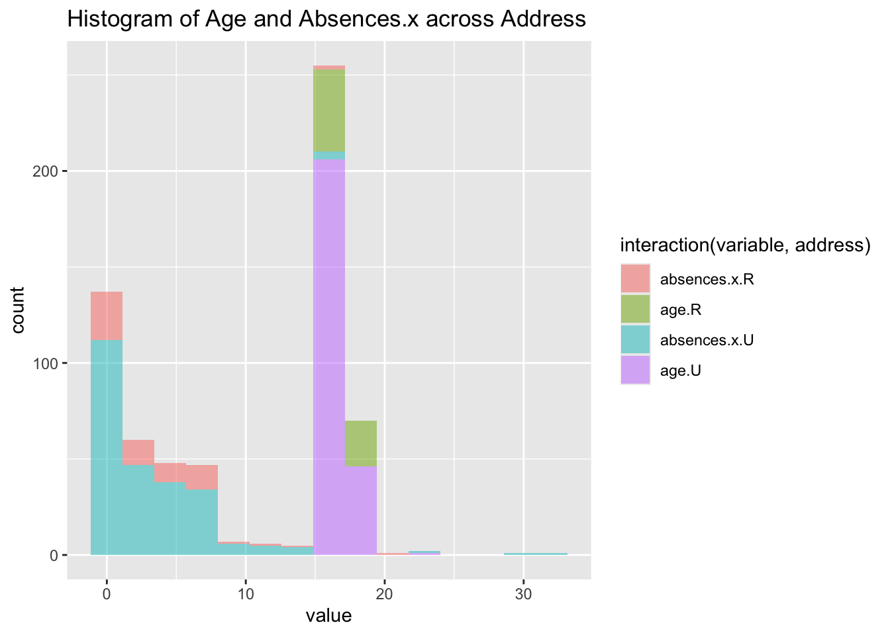
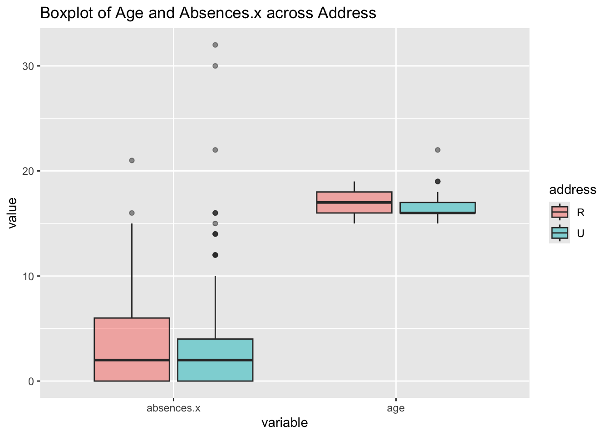
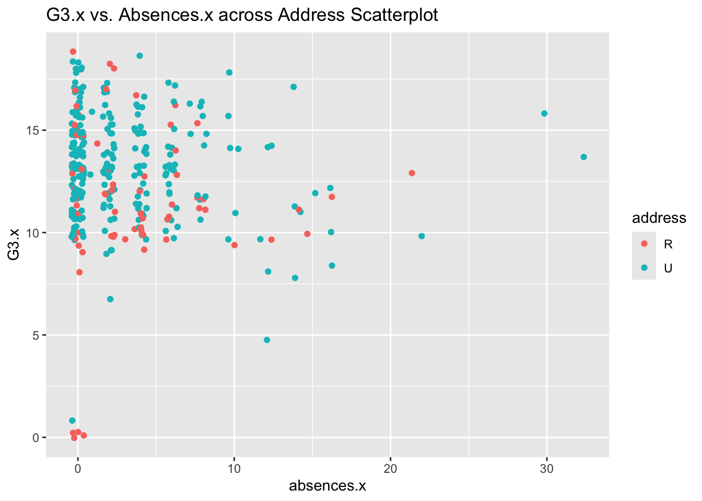
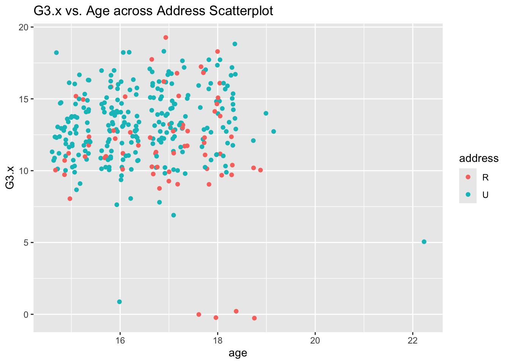
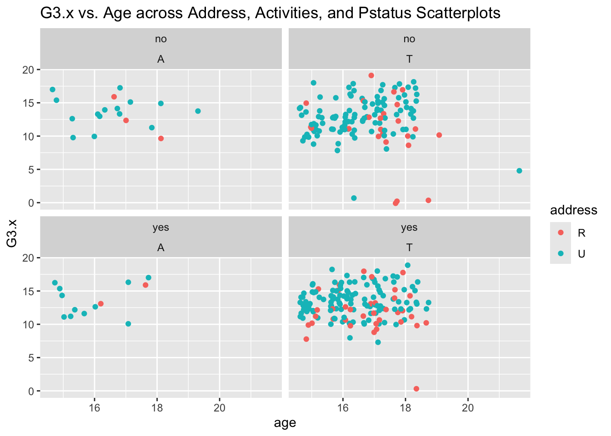

The data we are investigating comes from the UCI machine learning repository and is in regards to secondary education in two Portuguese schools in two subjects: Mathematics and Portuguese. The goal of analyzing this data is to determine how out-of-school variables correlate to the student’s in-school performance.
Variables that were considered are as follows:
age: Integer, represents the student’s age (numeric: from 15 to 22)
address: Categorical, represents the student’s home address type (binary: ‘U’ - Urban, ‘R’ - Rural)
famsize: Categorical, represents the student’s family size (binary: ‘LE3’ - less than or equal to 3, ‘GT3’ - greater than 3)
Pstatus: Categorical, represents the student’s parent’s cohabitation status (binary: ‘T’ - living together, ‘A’ - living apart)
Fjob: Categorical, represents the student’s father’s job (nominal: ‘teacher’, ‘health’ care related’, civil ‘services’, ‘at_home’, ‘other’)
reason: Categorical, represents the reason to choose this school (nominal: close to ‘home’, school ‘reputation’, ‘course’ preference, ‘other’)
guardian: Categorical, represents the student’s guardian (nominal: ‘mother’, ‘father’, ‘other’)
paid: Binary, represents the student’s enrollment in extra paid classes within the course subject (Math or Portuguese) (binary: yes, no)
activities: Binary, represents the student’s participation in extra-curricular activities (binary: yes, no)
absences: Integer, represents the student’s number of school absences (numeric: from 0 to 93)
G1: Categorical, represents the student’s first period grade (numeric: from 0 to 20)
G2: Categorical, represents the student’s second period grade (numeric: from 0 to 20)
G3: Integer, represents the student’s final grade (numeric: from 0 to 20)
Task 1: Read in the Data and Modify
To begin proper analysis, we will read in the downloaded data from two .csv files using Base R. The data in the .csv files is separated by semi-colons, which we need to specify. Then, we can combine the two .csv files using rbind() and confirm the data frame looks right.
school sex age address famsize Pstatus Medu Fedu Mjob Fjob reason
1 GP F 18 U GT3 A 4 4 at_home teacher course
2 GP F 17 U GT3 T 1 1 at_home other course
3 GP F 15 U LE3 T 1 1 at_home other other
4 GP F 15 U GT3 T 4 2 health services home
5 GP F 16 U GT3 T 3 3 other other home
6 GP M 16 U LE3 T 4 3 services other reputation
guardian traveltime studytime failures schoolsup famsup paid activities
1 mother 2 2 0 yes no no no
2 father 1 2 0 no yes no no
3 mother 1 2 0 yes no no no
4 mother 1 3 0 no yes no yes
5 father 1 2 0 no yes no no
6 mother 1 2 0 no yes no yes
nursery higher internet romantic famrel freetime goout Dalc Walc health
1 yes yes no no 4 3 4 1 1 3
2 no yes yes no 5 3 3 1 1 3
3 yes yes yes no 4 3 2 2 3 3
4 yes yes yes yes 3 2 2 1 1 5
5 yes yes no no 4 3 2 1 2 5
6 yes yes yes no 5 4 2 1 2 5
absences G1 G2 G3
1 4 0 11 11
2 2 9 11 11
3 6 12 13 12
4 0 14 14 14
5 0 11 13 13
6 6 12 12 13
We will do the same thing again, but this time using tidyverse! Readr is a package that allows us to read .csv files into tibbles instead of data frames and also has a built in function for files with semi-colons as the delimiter: read_csv2().
Once these .csv files are brought in, we can use dplyr’s inner_join() function to join the two tibbles into one tibble with both math and Portuguese data. When we do this, we do get an error and our output tibble joined_students_mat_por has zero rows.
library(tidyverse)
── Attaching core tidyverse packages ──────────────────────── tidyverse 2.0.0 ──
✔ dplyr 1.1.4 ✔ readr 2.1.5
✔ forcats 1.0.0 ✔ stringr 1.5.1
✔ ggplot2 3.5.1 ✔ tibble 3.2.1
✔ lubridate 1.9.3 ✔ tidyr 1.3.1
✔ purrr 1.0.2
── Conflicts ────────────────────────────────────────── tidyverse_conflicts() ──
✖ dplyr::filter() masks stats::filter()
✖ dplyr::lag() masks stats::lag()
ℹ Use the conflicted package (<http://conflicted.r-lib.org/>) to force all conflicts to become errors
ℹ Using "','" as decimal and "'.'" as grouping mark. Use `read_delim()` for more control.
Rows: 395 Columns: 33── Column specification ────────────────────────────────────────────────────────
Delimiter: ";"
chr (17): school, sex, address, famsize, Pstatus, Mjob, Fjob, reason, guardi...
dbl (16): age, Medu, Fedu, traveltime, studytime, failures, famrel, freetime...
ℹ Use `spec()` to retrieve the full column specification for this data.
ℹ Specify the column types or set `show_col_types = FALSE` to quiet this message.
student_port_tidy <-read_csv2('student-por.csv')
ℹ Using "','" as decimal and "'.'" as grouping mark. Use `read_delim()` for more control.
Rows: 649 Columns: 33── Column specification ────────────────────────────────────────────────────────
Delimiter: ";"
chr (17): school, sex, address, famsize, Pstatus, Mjob, Fjob, reason, guardi...
dbl (16): age, Medu, Fedu, traveltime, studytime, failures, famrel, freetime...
ℹ Use `spec()` to retrieve the full column specification for this data.
ℹ Specify the column types or set `show_col_types = FALSE` to quiet this message.
Let’s try again, but exclude the G1, G2, G3, paid, and absences variables when joining. This works! We now have a tibble joined_students with 320 rows and 38 columns/variables.
When looking deeper into why this join had a successful output and the other did not, I believe it is because we are using an inner join and there were no observations where the student’s grades and absences variables matched between the Portuguese subject and the Math subject in addition to their home life variables. This makes sense, as we are looking at the student’s school performance as an output of other variables interactions.
# A tibble: 320 × 38
school sex age address famsize Pstatus Medu Fedu Mjob Fjob reason
<chr> <chr> <dbl> <chr> <chr> <chr> <dbl> <dbl> <chr> <chr> <chr>
1 GP F 18 U GT3 A 4 4 at_home teach… course
2 GP F 17 U GT3 T 1 1 at_home other course
3 GP F 15 U GT3 T 4 2 health servi… home
4 GP F 16 U GT3 T 3 3 other other home
5 GP M 16 U LE3 T 4 3 services other reput…
6 GP M 16 U LE3 T 2 2 other other home
7 GP F 17 U GT3 A 4 4 other teach… home
8 GP M 15 U LE3 A 3 2 services other home
9 GP M 15 U GT3 T 3 4 other other home
10 GP F 15 U GT3 T 4 4 teacher health reput…
# ℹ 310 more rows
# ℹ 27 more variables: guardian <chr>, traveltime <dbl>, studytime <dbl>,
# failures <dbl>, schoolsup <chr>, famsup <chr>, paid.x <chr>,
# activities <chr>, nursery <chr>, higher <chr>, internet <chr>,
# romantic <chr>, famrel <dbl>, freetime <dbl>, goout <dbl>, Dalc <dbl>,
# Walc <dbl>, health <dbl>, absences.x <dbl>, G1.x <dbl>, G2.x <dbl>,
# G3.x <dbl>, paid.y <chr>, absences.y <dbl>, G1.y <dbl>, G2.y <dbl>, …
Let’s check out four specific categorical variables: address, famsize, guardian, and reason. We can use the mutate function to change these to be factor variables in each tibble: math, Portuguese, and the combined.
# A tibble: 395 × 33
school sex age address famsize Pstatus Medu Fedu Mjob Fjob reason
<chr> <chr> <dbl> <fct> <fct> <chr> <dbl> <dbl> <chr> <chr> <fct>
1 GP F 18 U GT3 A 4 4 at_home teach… course
2 GP F 17 U GT3 T 1 1 at_home other course
3 GP F 15 U LE3 T 1 1 at_home other other
4 GP F 15 U GT3 T 4 2 health servi… home
5 GP F 16 U GT3 T 3 3 other other home
6 GP M 16 U LE3 T 4 3 services other reput…
7 GP M 16 U LE3 T 2 2 other other home
8 GP F 17 U GT3 A 4 4 other teach… home
9 GP M 15 U LE3 A 3 2 services other home
10 GP M 15 U GT3 T 3 4 other other home
# ℹ 385 more rows
# ℹ 22 more variables: guardian <fct>, traveltime <dbl>, studytime <dbl>,
# failures <dbl>, schoolsup <chr>, famsup <chr>, paid <chr>,
# activities <chr>, nursery <chr>, higher <chr>, internet <chr>,
# romantic <chr>, famrel <dbl>, freetime <dbl>, goout <dbl>, Dalc <dbl>,
# Walc <dbl>, health <dbl>, absences <dbl>, G1 <dbl>, G2 <dbl>, G3 <dbl>
# A tibble: 649 × 33
school sex age address famsize Pstatus Medu Fedu Mjob Fjob reason
<chr> <chr> <dbl> <fct> <fct> <chr> <dbl> <dbl> <chr> <chr> <fct>
1 GP F 18 U GT3 A 4 4 at_home teach… course
2 GP F 17 U GT3 T 1 1 at_home other course
3 GP F 15 U LE3 T 1 1 at_home other other
4 GP F 15 U GT3 T 4 2 health servi… home
5 GP F 16 U GT3 T 3 3 other other home
6 GP M 16 U LE3 T 4 3 services other reput…
7 GP M 16 U LE3 T 2 2 other other home
8 GP F 17 U GT3 A 4 4 other teach… home
9 GP M 15 U LE3 A 3 2 services other home
10 GP M 15 U GT3 T 3 4 other other home
# ℹ 639 more rows
# ℹ 22 more variables: guardian <fct>, traveltime <dbl>, studytime <dbl>,
# failures <dbl>, schoolsup <chr>, famsup <chr>, paid <chr>,
# activities <chr>, nursery <chr>, higher <chr>, internet <chr>,
# romantic <chr>, famrel <dbl>, freetime <dbl>, goout <dbl>, Dalc <dbl>,
# Walc <dbl>, health <dbl>, absences <dbl>, G1 <dbl>, G2 <dbl>, G3 <dbl>
# A tibble: 320 × 38
school sex age address famsize Pstatus Medu Fedu Mjob Fjob reason
<chr> <chr> <dbl> <fct> <fct> <chr> <dbl> <dbl> <chr> <chr> <fct>
1 GP F 18 U GT3 A 4 4 at_home teach… course
2 GP F 17 U GT3 T 1 1 at_home other course
3 GP F 15 U GT3 T 4 2 health servi… home
4 GP F 16 U GT3 T 3 3 other other home
5 GP M 16 U LE3 T 4 3 services other reput…
6 GP M 16 U LE3 T 2 2 other other home
7 GP F 17 U GT3 A 4 4 other teach… home
8 GP M 15 U LE3 A 3 2 services other home
9 GP M 15 U GT3 T 3 4 other other home
10 GP F 15 U GT3 T 4 4 teacher health reput…
# ℹ 310 more rows
# ℹ 27 more variables: guardian <fct>, traveltime <dbl>, studytime <dbl>,
# failures <dbl>, schoolsup <chr>, famsup <chr>, paid.x <chr>,
# activities <chr>, nursery <chr>, higher <chr>, internet <chr>,
# romantic <chr>, famrel <dbl>, freetime <dbl>, goout <dbl>, Dalc <dbl>,
# Walc <dbl>, health <dbl>, absences.x <dbl>, G1.x <dbl>, G2.x <dbl>,
# G3.x <dbl>, paid.y <chr>, absences.y <dbl>, G1.y <dbl>, G2.y <dbl>, …
Task 2: Summarize the Data (Very Basic EDA)
Now, let’s move on the summarizing the data numerically and visually to understand the relationships between the variables in the data. We can begin with the Categorical variables.
Categorical Variables
This one-way contingency table shows there are 67 students who live in a rural area.
table(joined_students$address)
R U
67 253
This two-way contingency table shows there are 76 students who live in an urban area with a family size of less than or equal to three.
table(joined_students[,c('address', 'famsize')])
famsize
address GT3 LE3
R 53 14
U 177 76
This three-way contingency table shows that out of the students who have a guardian as their mother, 11 of them live in rural areas with a family size of less than or equal to 3.
, , guardian = father
famsize
address GT3 LE3
R 9 3
U 44 18
, , guardian = mother
famsize
address GT3 LE3
R 43 11
U 128 55
, , guardian = other
famsize
address GT3 LE3
R 1 0
U 5 3
We can use table() to create a two-way conditional table, first, by subsetting it, then, by creating a three-way table and subsetting it. Both result in the same table: where we can see 43 students with their mother as their guardian live in rural areas with family sizes greater than 3.
Let’s try to create a two-way contingency table using group_by() and summarize() from dplyr, then pivot_wider() to make the result look like the output from using table().
`summarise()` has grouped output by 'address'. You can override using the
`.groups` argument.
# A tibble: 2 × 3
# Groups: address [2]
address GT3 LE3
<chr> <int> <int>
1 R 43 11
2 U 128 55
Now for the visual: We can use ggplot() to create both a stacked bar graph and a side-by-side bar graph!
g <-ggplot(data = joined_students |>drop_na(address, famsize), aes(x = address, fill = famsize)) +geom_bar() +labs(x ="Address",title ="Stacked Address vs. Family Size Bar Graph")h <-ggplot(data = joined_students |>drop_na(address, famsize), aes(x = address, fill = famsize)) +geom_bar(position ='dodge') +labs(x ="Address",title ="Side-By-Side Address vs. Family Size Bar Graph") +scale_fill_discrete('Family Size')g
h
Numeric Variables (and Across Groups)
Moving on, let’s investigate the numeric variables: age, absences, and the three test grade variables. We can begin by checking out the measures of center and spread for age, absences in Portuguese, and the G3 grade in Portuguese.
Now what does those measures look like across the address grouping variable? Looks like students with an urban address have a slightly lower average age, lower average absences, and higher average G3 value than their rural address counterparts.
How about across both address and family size? Students from rural areas and larger family size have lower average and median G3 Portuguese scores than students with smaller families and students with urban addresses.
Let’s see what the correlation matrix looks like between all of the numeric variables!
I found it interesting and validating that the correlation between absences from both subjects was as high as it was because if a student misses a full day of classes, they will be absent from both subjects.
Correlation between grades of the same subject is strong, which is reasonable.
I am surprised to see a lack of correlation between absences and the resulting grades.
Let’s check out a histogram for age and absences in Portuguese across address. I’m not feeling like we can draw many conclusions from this visual, as there are more urban address students represented and it is a count graph and age and absences are plotted on the same histogram, per the instructions, which is weird.
histo_data <- joined_students |>drop_na(age, absences.x, address) |>select(address, age, absences.x) |>pivot_longer(cols=c(age, absences.x),names_to ='variable',values_to ='value')ggplot(histo_data, aes(x=value, fill =interaction(variable, address))) +geom_histogram(alpha=0.5, bins=15) +labs(title ='Histogram of Age and Absences.x across Address')

The Kernel Density Plot makes slightly more sense, as it shows density instead of count data, however the age and absences being on the same plot really confuses me.
ggplot(histo_data, aes(x=value, fill =interaction(variable, address))) +geom_density(kernel='gaussian') +labs(title ='Kernel Density Plot of Age and Absences.x across Address')
Finally, the boxplot of the same information makes way more sense. We can see the wider spread of the number of absences among rural students versus urban students. Age is also more widely spread in the rural student population than the urban students.
ggplot(histo_data, aes(x= variable, y=value, fill=address)) +geom_boxplot(alpha=0.5)+labs(title='Boxplot of Age and Absences.x across Address')

We can see in both of the scatterplots belowthe relationship between the G3.x variable and both Absences.x and age across address. Most of the students have less than 10 absences for this course, while the age is more spread across different values in a cluster, with less outliers for either type of address.
ggplot(joined_students, aes(x= absences.x, y=G3.x, color=address)) +geom_point(position='jitter') +labs(title ='G3.x vs. Absences.x across Address Scatterplot')

ggplot(joined_students, aes(x= age, y=G3.x, color=address)) +geom_point(position='jitter')+labs(title ='G3.x vs. Age across Address Scatterplot')

Let’s see how these scatterplots look for different student’s father’s jobs. More scatter for grades occurred in services than any other jobs. Most jobs were in the ‘other’ category, with only rural address students having very low (outlier) G3.x scores. Father’s who had jobs ‘at_home’ or in ‘health’ had students with a G3.x score of more than 10.
ggplot(joined_students, aes(x= age, y=G3.x, color=address)) +geom_point(position='jitter')+facet_wrap(~ Fjob)+labs(title='G3.x vs. Age across Address and Fjob Scatterplots')
Let’s see about these same core variables across parental living status and involvement in extra-curricular activities.
More students had parents who lived together than apart. No students with parents living apart had less than a 9 score for the G3.x, while there was certainly more spread among the larger population of students with parents that lived together.
ggplot(joined_students, aes(x= age, y=G3.x, color=address)) +geom_point(position='jitter')+facet_wrap(activities ~ Pstatus)+labs(title='G3.x vs. Age across Address, Activities, and Pstatus Scatterplots')

There is one outlier of a student living in a rural area with parents that live together and is involved with extra-curricular activities who scored very low on the G3.x variable. A follow-up might be to investigate this student and if any data is missing or if there are challenging experiences occurring that are not included in the data categories.